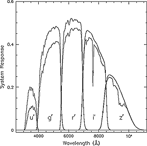

|  |
The image on the right shows the sensitivity of the CCD chips in SDSS's five filters as a function of wavelength. The image shows two curves: the top curve is for the chips in a vacuum, the bottom curve is for the chips looking through the Earth's atmosphere.
The image shows that the filters are less sensitive when looking through Earth's atmosphere. It also shows that the filters overlap slightly - some of the same wavelengths of light are seen by the u and g filters, for example.
For more information on SDSS's CCD camera and filters, see the
About SDSS: Instruments section of SkyServer,
or the Image Processing
project.